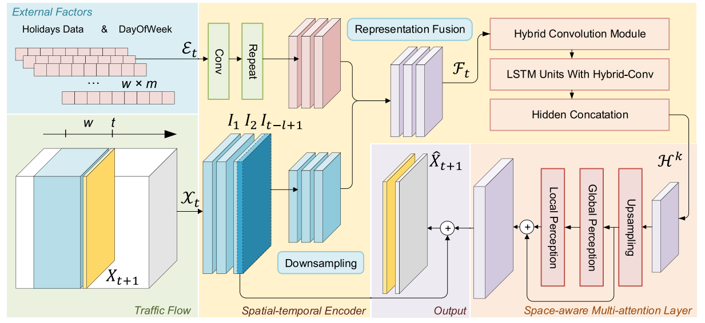

Paper1:
MSSRM: A Multi-Embedding Based Self-Attention Spatio-temporal Recurrent Model for Human Mobility Prediction
Shunjie Wen, Xu Zhang, Ruixu Cao, Boming Li, and Yan Li
Chongqing University of Posts and Telecommunications
Abstract
Human mobility affects many aspects of anurban area, including spatial structure, temporal connectivity, even response to epidemics. Prediction of human mobility is of great significance for a wide spectrum of location-based applications. To enhance the spatio-temporal contexts between check-ins, we encode check-in locations as a graph and propose a multi-embedding based self-attention spatio-temporal recurrent model (MSSRM) for human mobility prediction. In this paper, we first obtain elaboratespatial and temporal embeddings from the directed weighted graph of spatio-temporal points and the frequency distribution of users’ visits. Subsequently, we adopt a long short-term memory layer to capture the long-term and short-term spatio-temporal dependencies and introduce a self-attention mechanism to distinguish each location in different contexts. Finally, we use a fully connected layer and incorporate user information to yield prediction results. Extensive experiment results based on two real-world datasets demonstrate that our model outperforms the state-of-the-art models.
Architecture
Paper2:
A Hybrid-Convolution Spatial–Temporal Recurrent Network For Traffic Flow Prediction
Xu Zhang, Shunjie Wen, Liang Yan, Jiangfan Feng and Ying Xia
Chongqing University of Posts and Telecommunications
Key Laboratory of Tourism Multisource Data Perception and Decision, Ministry of Culture and Tourism
Department of Electrical and Computer Engineering, Inha University, Incheon
Abstract
Accurate traffic flow prediction is valuable for satisfying citizens’ travel needs and alleviating urban traffic pressure. However, it is highly challenging due to the complexity of the urban geospatial structure and the highly nonlinear temporal and spatial dependence on human mobility. Most existing works proposed to rely on strict periods (e.g. daily and weekly) and separate the extraction of temporal and spatial features. Besides, most Recurrent Neural Network (RNN)-based models either fail to capture variations of spatial–temporal features in adjacent timestamps or ignore details of closeness. In this paper, we propose a Multi-attention based Hybrid-convolution Spatial-temporal Recurrent Network (MHSRN) for region-based traffic flow prediction. In MHSRN, we leverage a hybrid-convolution module to capture both shifting features and rich information at the nearest timestamps, and we apply the downsampling procedure to reduce the computation of RNN-based model. Furthermore, we propose to adopt a space-aware multi-attention module to re-perceive global and local spatial–temporal features. We conduct extensive experiments based on three realworld datasets. The results show that the MHSRN outperforms other challenging baselines by approximately 0.2–8.1% in mean absolute error on all datasets. On datasets other than TaxiBJ, the MHSRN reduces the root mean square error by at least 2.8% compared with the RNN-based model.
Architecture 